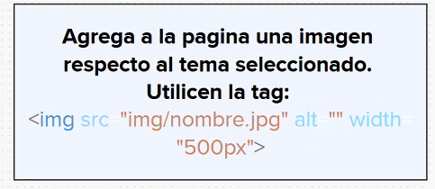

Crear en el proyecto un un archivo html, crea una página de algún tema de interés personal que tenga tres párrafos.
Bienvenido al tema "Herramientas de Git y personalización", en el cual aprenderás acerca de las diversas herramientas y opciones disponibles para personalizar tu experiencia de trabajo con Git.
Las herramientas de Git y personalización son aquellas opciones y características adicionales que se pueden agregar o ajustar para mejorar la experiencia y eficiencia de uso de Git.
Estas herramientas incluyen complementos, plugins, configuraciones de línea de comandos, personalización de la interfaz, entre otros.
